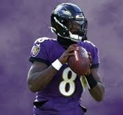

About
The Baltimore Ravens are a professional American football team based in Baltimore, Maryland. Established in 1996, the team is part of the American Football Conference (AFC) North division in the National Football League (NFL). The Ravens are named after Edgar Allan Poe’s famous poem “The Raven,” reflecting Baltimore’s literary heritage. Known for their strong defensive legacy, the team has won two Super Bowl championships, in 2000 and 2012. Home games are played at M&T Bank Stadium, where passionate fans, often referred to as the "Ravens Flock," create a formidable home-field atmosphere. Iconic players like Ray Lewis, Ed Reed, and Lamar Jackson have contributed to the team's success, making the Ravens one of the NFL's most competitive franchises.
Top Players
As of December 2024, the Baltimore Ravens are consistently ranked among the top teams in the NFL, often holding a spot in the top 5 of various power rankings. Their high position is largely due to the standout performances of players with top PFF grades. For instance, standout players like Lamar Jackson, who continues to show growth under a new offense, and the defense, bolstered by key players such as Roquan Smith and Marlon Humphrey, help elevate the team's standing. These individual performances have earned the Ravens praise for their balanced roster, combining a dynamic offense with a strong defense. As a result, the Ravens are positioned as one of the contenders for a Super Bowl berth, with many analysts noting their depth and the consistency of their top-tier players- Lamar Jackson
- Passer Rating- 116.3 (1st)
- Pass Tds- 29 (2nd)
- YPA- 8.7 (1st)
- Derrick Henry
- Yds- 1407 (2nd)
- Tds- 13 (Tied-1st)
- Car- 240 (3rd)
- Kyle Hamilton
- PFF Grade- 87.3 (4th)
- Tackles- 88
- Sacks- 2
- Roquan Smith
- Tackles- 121
- FF- 1
- Int- 1
- Marlon Humphrey
- Int- 5
- PD- 12
- FF- 1
Highlights
I could not get any videos of the real Ravens playing becuase the NFL blocked everything so here is someone using the Ravens in Madden
NFL Team Popularity
Check out this map of the most popular NFL by county in the United States!